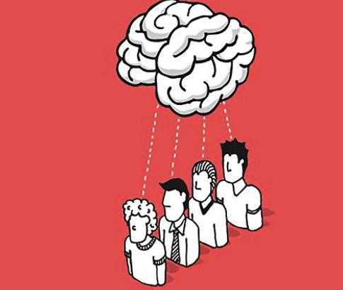
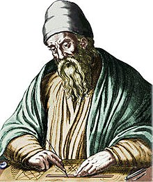
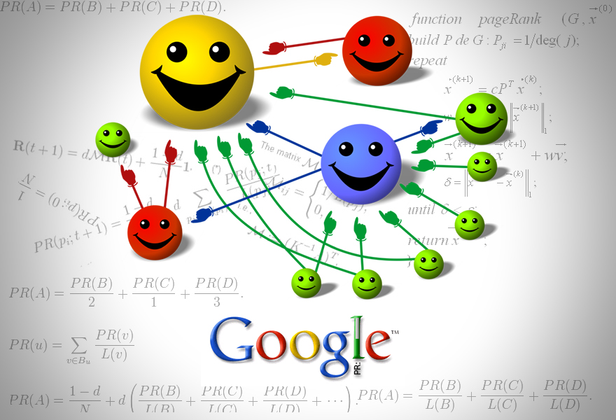
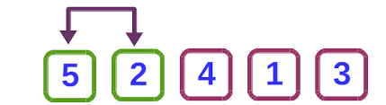

La persuasión es el proceso de influir en las creencias, actitudes o comportamientos de otras personas a través de la comunicación. En el ámbito de la ingeniería, se utiliza para convencer a las partes interesadas de la viabilidad de un proyecto o de la efectividad de una solución técnica.
A continuación encontrarás las definiciones de las principales palabras y expresiones relacionadas con la asignatura de fundamentos de ingeniería:
Persuasión
Euclides
Euclides fue un matemático griego, conocido como el "padre de la geometría". Su obra más destacada, "Los Elementos", fue una de las más influyentes en la historia de las matemáticas, estableciendo fundamentos clave en geometría, álgebra y teoría de números que siguen siendo estudiados hoy en día en la ingeniería y otras disciplinas científicas.
Algoritmo de PageRank
El algoritmo de PageRank es un sistema de clasificación de páginas web desarrollado por Larry Page y Sergey Brin, fundadores de Google. Utiliza un enfoque basado en enlaces entre páginas para determinar la relevancia y calidad de un sitio web. Este algoritmo se utiliza ampliamente en motores de búsqueda para mejorar los resultados de búsqueda mediante la asignación de puntuaciones a páginas web.
Instrucciones
Las instrucciones son comandos o directrices que indican el paso a paso necesario para realizar una tarea o ejecutar un proceso. En programación, las instrucciones constituyen los bloques fundamentales de un algoritmo, cada una de ellas representando una operación específica que el sistema debe ejecutar.
Ordenadores
Los ordenadores son dispositivos electrónicos que procesan, almacenan y gestionan datos a través de operaciones matemáticas y lógicas. Se componen de componentes físicos (hardware) y programas (software) que permiten realizar tareas que van desde cálculos complejos hasta la gestión de bases de datos y la ejecución de programas interactivos.

Algoritmo de Burbuja
El algoritmo de burbuja es un algoritmo simple de ordenación que compara elementos adyacentes en una lista y los intercambia si están en el orden incorrecto. Este proceso se repite hasta que toda la lista queda ordenada. Aunque es fácil de entender, su eficiencia es limitada, lo que lo hace adecuado solo para listas pequeñas.
Ingeniería
La ingeniería es la aplicación de principios científicos, matemáticos y técnicos para resolver problemas prácticos y mejorar el bienestar humano. Abarca una variedad de disciplinas, como la ingeniería civil, electrónica, mecánica y de software, y busca crear soluciones innovadoras que optimicen procesos, estructuras y sistemas en diversos campos de la industria.

Investigación
La investigación es el proceso sistemático de indagar, explorar y analizar fenómenos, conceptos o procesos con el fin de generar nuevo conocimiento o resolver problemas específicos. En ingeniería, la investigación se enfoca en desarrollar nuevas tecnologías, mejorar métodos existentes y aplicar soluciones innovadoras a desafíos técnicos.

Disciplinas
Las disciplinas son ramas del conocimiento que se especializan en áreas concretas de estudio. En el contexto de la ingeniería, las disciplinas incluyen áreas como la ingeniería mecánica, electrónica, civil, informática, y más. Cada disciplina se enfoca en aspectos específicos de la tecnología y la ciencia, y contribuye al desarrollo y la innovación en diversas industrias.